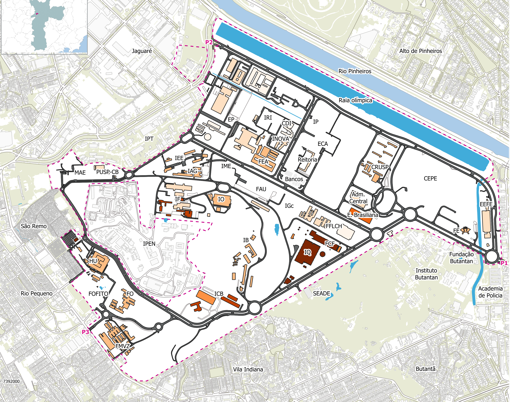

Feira de Profissões
CIÊNCIASMOLECULARES
E se a pergunta viesse antes da área?
Como a universidade se organiza
A universidade é organizada em institutos.

E se começássemos pelo problema?
No CM, a pergunta organiza o caminho. As áreas entram quando ajudam a responder.
Perguntas atravessam áreas
Problemas reais não respeitam departamentos.
A cada pergunta, várias linguagens científicas aparecem ao mesmo tempo.
Então, o que é o Ciências Moleculares?
O que é o Ciências Moleculares?
Um curso da USP criado para formar estudantes capazes de atravessar fronteiras científicas.
Formação amplaUma base científica comum para enxergar problemas de vários ângulos.
Liberdade acadêmicaUm percurso que começa a responder às perguntas de cada estudante.
PesquisaAprender ciência também significa participar da construção dela.
Ciclo Básico
Primeiro: construir uma linguagem científica comum.
científica
comum
O ciclo avançado
Depois do ciclo básico, cada aluno constrói sua própria trajetória acadêmica.
O Ciclo Avançado gira em torno de um projeto de pesquisa, orientado por uma pergunta científica própria.
Básico
interesse
pesquisa
personalizada
A grade pode incluir disciplinas de diferentes unidades da USP e, em alguns casos, da pós-graduação.
Universo de projetos
Da matemática pura à biologia molecular.
Interdisciplinaridade é combinar ferramentas quando o problema exige.
Perfil
Essas perguntas parecem com você?
Talvez o CM combine com você
Como entrar
O caminho começa dentro da USP.
ENEM-USP
Provão Paulista
Não é necessário entrar diretamente no CM pelo vestibular. A seleção pode ser tentada em diferentes momentos da graduação, do início ao fim do curso original. Datas, etapas e regras podem mudar: consulte sempre o edital vigente.
E se a pergunta viesse antes da área?
Ciências Moleculares.
Uma formação para aprender a atravessar fronteiras científicas.
CIÊNCIASMOLECULARES
Quer saber como funciona o curso?
Fala com a gente.